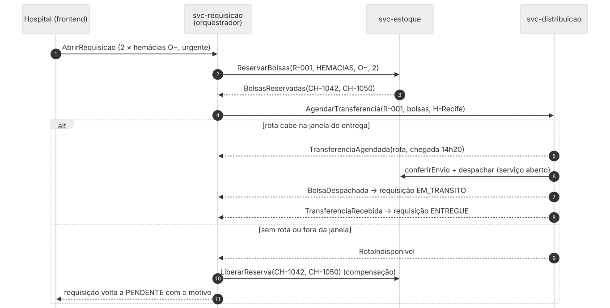

Trabalho U2 · Parte 2 — DDD, três camadas com Clean Architecture, projeção com microsserviços e três cenários com orçamento · Infraestrutura de Software · ADS · CESAR School · 2026.2
Squad do Projeto Integrador — Rota Vital Victor José Paes e Silva (líder) · Eduardo de Souza Cavalcanti Junior · Felipe Franca Alves de Lima · Helamã Leone de Lima Procídio · João Pedro Arruda Guimarães · Júlia Oliveira Veríssimo · Lucas Paguetti Pereira · Tiago Luiz Moreira de Vasconcelos
Repositório: github.com/viictorpaes/Rotavital Esta entrega:docs/arquitetura_SO/ (seções em Markdown, diagramas Mermaid, ADRs em adr/, planilha em orcamento/) e docs/specs/ Data: 24/11/2026 · Parte 3 (código): 01/12/2026
Resposta à devolutiva da pré-entrega (17/11)
Ponto levantado
O que fizemos
Onde
1. DDD a sério e domínio rico, sem entidades anêmicas
Medimos no código quais classes são anêmicas e quais regras da bolsa estão no serviço; desenhamos o agregado Bolsa com 6 objetos de valor e 8 invariantes
B.1–B.3
2. Camadas e Clean Architecture
Três camadas com portas e adaptadores, domínio em Java puro, ArchUnit na esteira (ADR 0002)
C.2–C.3
3. O que muda efetivamente (parte sai em 01/12)
Tabela antes → depois, com o escopo fechado da entrega de 01/12
F.1
4. TDD: cobertura atual e planejada
Cobertura medida com JaCoCo (77,5 % das linhas, 430 testes) e metas que quebram o build
F.2
5. SDD para ajudar nos itens anteriores
Especificação da HU-11 antes do código (spec, plano, tarefas) em docs/specs/ (ADR 0003)
F.3
A. Remodelagem do domínio com DDD 0,6
Hoje o backend é um monolito organizado por camada técnica (api, servico, dominio, repositorio); o pacote dominio tem 42 classes de assuntos diferentes que se enxergam livremente. A remodelagem separa o código por assunto do negócio, cada um com a sua linguagem.
A.1 Subdomínios
Subdomínio
Tipo
Justificativa
Gestão do estoque de hemocomponentes
Core
É onde o Rota Vital evita perda e erro: FEFO, compatibilidade ABO/Rh por componente e cadeia fria decidem qual bolsa pode ir para qual paciente.
Requisição hospitalar
Core
O pedido do hospital dispara o fluxo inteiro: é priorizado pela urgência e acompanhado até a entrega, ligando estoque e rede.
Distribuição na rede
Core
Rota mínima (Dijkstra) e transferência rastreada entre hemocentro e hospital, com previsão de chegada: é o "Rota" do nome.
Captação de doadores
Suporte
Necessária para repor o estoque (campanhas e agenda do hemocentro), mas segue regras comuns de agenda.
Atendimento ao paciente
Suporte
Cadastro e fila de pacientes por gravidade alimentam campanhas e requisições, sem regra complexa.
Monitoramento da cadeia fria
Suporte
Leituras de temperatura durante a entrega; hoje só no contrato e no schema (entrega, leitura_telemetria).
Identidade e acesso
Genérico
Login e papéis resolvidos pelo Supabase Auth; todo sistema precisa e não há o que inventar.
Geolocalização e trajetos
Genérico
Distância e tempo pelas ruas vêm da Google Routes API: serviço comprado, não construído.
A.2 Bounded contexts
Contexto
Responsabilidade (uma frase)
Classes de hoje que vão para ele
Estoque (core)
Manter as bolsas de cada banco de sangue e decidir quais estão aptas, em que ordem (FEFO) e para qual tipo sanguíneo.
Só getters; a validação do paciente está no ValidadorPaciente, um serviço
Regra fora do domínio
EstoqueService.conferirRegras
Prazo máximo de validade, volume ≤ 700 ml e faixa do sensor (−80 a 60 °C) são regras da bolsa, mas vivem no serviço
Porta dos fundos
reservar() e descartar() sem parâmetro
Mudam o status sem conferir nada (só os testes usam, mas nada impede um serviço de reservar bolsa vencida)
Primitivos
double volumeMl, double temperaturaCelsius, String id
Nada impede volume negativo ou código PQ-1042 para hemácias
Preso ao framework
11 classes com JPA; Persistable do Spring Data
Quebra a regra 5 da Seção C
B.2 O agregado Bolsa e B.3 as invariantes que a raiz protege

Raiz, entidade e objetos de valor; outros agregados entram só pelo id
Papel
Elemento e responsabilidade
Raiz
Bolsa: única porta de entrada; registrar, reservarPara, liberarReserva, despacharPara, receberEm, registrarUso, descartar, corrigirCadastro
Entidade
Movimentacao: cada mudança de status (de, para, quando, requisição); só a raiz cria
Objetos de valor
CodigoDaBolsa (sigla coerente com o componente), Validade (venceuEm, prazo máximo), Volume, Temperatura (dentroDaFaixaDe), MotivoDeDescarte; TipoSanguineo e TipoComponente já existem
Referências
BancoDeSangueId, RequisicaoId, HospitalId: nunca o objeto inteiro
#
Invariante
Hoje → Parte 3
I1
Status só muda pelas transições permitidas; UTILIZADA e DESCARTADA são finais
✓StatusBolsa.podePassarPara
I2
Bolsa vencida só pode ser descartada (vencer hoje ainda vale)
✓ → Validade.venceuEm
I3
Só bolsa apta pode ser reservada ou enviada
só no envio → HU-11
I4
Validade depois da coleta e dentro do prazo do componente (hemácias 42 d, plaquetas 7, plasma 730, crio 365)
no serviço → Validade
I5
Volume entre 0 e 700 ml; temperatura dentro do que o sensor mede
no serviço → Volume, Temperatura
I6
Código combina com o componente (CH só para hemácias)
só no gerador → CodigoDaBolsa
I7
Descarte exige categoria; "Validade expirada" só com bolsa vencida
✓ (sai o descartar() vazio)
I8
Cadastro só é corrigido enquanto DISPONIVEL
✓ mantida
Fora do agregado: "um lote gera no máximo uma bolsa de cada componente" envolve várias bolsas, então fica no caso de uso RegistrarBolsa, que consulta a porta BolsaRepository.
B.4 História âncora · HU-11 Reserva só de bolsa apta (invariante I3)
Persona: Marina, responsável técnica do banco de sangue BS-01 (papel ADMIN). Como responsável técnica, quero reservar para uma requisição apenas bolsas aptas, para que nenhuma bolsa vencida ou com a cadeia fria rompida seja separada para um paciente.
#
Critério de aceite (testável)
CA1
Bolsa DISPONIVEL, na validade e na faixa: ao reservar para R-001, fica RESERVADA e a movimentação registra R-001
CA2
Bolsa que vence hoje ainda pode ser reservada
CA3
Bolsa vencida é recusada com "A bolsa CH-1090 venceu em 30/09/2026 e só pode ser descartada." e continua DISPONIVEL
CA4
Bolsa fora da faixa é recusada com "A bolsa CH-1077 está a 9.5 °C, fora da faixa de 2.0 °C a 6.0 °C do componente HEMACIAS, e não pode ser reservada."
CA5
Bolsa que não está DISPONIVEL é recusada pela transição ("A bolsa CH-1043 está UTILIZADA e não pode passar para RESERVADA.")
CA6
Pela API, a recusa volta como 422 no formato ErroDTO; sem papel ADMIN, 403
B.5 Cenário Gherkin (executado na Parte 3 pelo AceitacaoIT; arquivo completo em docs/arquitetura_SO/HU-11-reserva-de-bolsa-apta.feature)
# language: pt
@HU-11
Funcionalidade: HU-11 — Reserva só de bolsa apta
Contexto:
Dado que hoje é 01/10/2026
E o banco de sangue "BS-01" com as bolsas:
| id | componente | tipo | validade | temperatura | status |
| CH-1042 | hemácias | O- | 20/10/2026 | 4.0 | disponível |
| CH-1090 | hemácias | B- | 30/09/2026 | 4.0 | disponível |
| CH-1077 | hemácias | A+ | 25/10/2026 | 9.5 | disponível |
Cenário: Reservar bolsa apta para a requisição
Quando reservo a bolsa "CH-1042" para a requisição "R-001"
Então a bolsa "CH-1042" fica "reservada" no estoque
E a última movimentação da bolsa "CH-1042" aponta a requisição "R-001"
Esquema do Cenário: Bolsa que não está apta não é reservada
Quando reservo a bolsa "<bolsa>" para a requisição "R-001"
Então a movimentação é recusada com a mensagem "<mensagem>"
E a bolsa "<bolsa>" continua "disponível" no estoque
Exemplos:
| bolsa | mensagem |
| CH-1090 | A bolsa CH-1090 venceu em 30/09/2026 e só pode ser descartada. |
| CH-1077 | A bolsa CH-1077 está a 9.5 °C, fora da faixa de 2.0 °C a 6.0 °C do (…) |
C. Arquitetura em três camadas com Clean Architecture 0,5
C.1 As três camadas e o que fica em cada uma
Camada
O que fica nela
Hoje
Na proposta
Apresentação
Telas React; controllers REST que convertem JSON ↔ comando/DTO e devolvem o status HTTP e o erro em RFC 7807
frontend/src/pages, api/
frontend/ + <ctx>.apresentacao
Negócio · aplicação
Casos de uso: transação, papel de quem chama, carregar pela porta, chamar o domínio, gravar e publicar eventos; declaram as portas
servico/
<ctx>.negocio.aplicacao
Negócio · domínio
Entidades, objetos de valor, invariantes e eventos de domínio, em Java puro
dominio/ (com JPA)
<ctx>.negocio.dominio
Dados
Adaptadores: repositórios JPA, classes *Entity e mapeadores, consultas às views, migrations, clientes Supabase Auth e Google Routes
repositorio/, supabase/, google/
<ctx>.dados
C.2 Regra de dependência e Clean Architecture
Cada camada só usa a de baixo, e as dependências apontam para o centro: o domínio não conhece ninguém; a aplicação conhece o domínio e as portas que ela declara; Spring, JPA, HTTP, Supabase e Google entram como adaptadores que implementam uma porta.
Caso de uso da HU-11: a regra está na Bolsa; o caso de uso só carrega, chama e salva
#
Regra
Hoje no código
1
Apresentação só chama a aplicação; nunca repositório ou cliente externo
✓ nenhum controller importa repositorio, supabase ou google
2
Transação e conferência de papel só na aplicação
✓@Transactional e IdentificacaoService só em servico
3
Cliente externo em dados, atrás de interface do negócio
✓CalculadoraDeTrajeto → GoogleRoutes
4
Domínio não importa apresentação, aplicação nem dados
✓
5
Domínio não depende de banco nem de framework
✗ 11 de 42 classes com JPA → *Entity + mapeador em dados (ADR 0002)
6
Um contexto não mexe no domínio de outro
✗TransferenciaDeBolsa muda o status da bolsa → serviço aberto do Estoque + BolsaDescartada
Para a regra não voltar a quebrar: teste ArchUnit no mvn verify (que a esteira da Parte 1 já roda) falha se ..negocio.dominio.. importar jakarta.persistence, org.hibernate ou org.springframework.
C.3 Estrutura de pacotes (por bounded context e, dentro dele, por camada)
Camada é como o código está organizado; tier é onde ele roda. São três de cada, mas não coincidem um para um: o tier de aplicação carrega um pedaço de cada camada. Separar os pacotes por contexto organiza o código, mas continua sendo um único deploy (monolito modular, ADR 0001). Separar também os tiers por contexto é a projeção da Seção D.
D. Projeção com microsserviços 0,3
D.1 Quais contextos viram serviços, e por quê
Serviço
Contextos
Por que separar
svc-estoque
Estoque
Core e dono da bolsa: o mais consultado (painel, sugestão de lote, alertas) e o único que muda status de bolsa.
svc-requisicao
Requisição
Core e orquestrador da saga: guarda o estado do pedido do início ao fim.
svc-distribuicao
Distribuição
Perfil diferente (CPU do Dijkstra e Google Routes): escala separado e isola a falha da API externa.
svc-captacao
Captação + Atendimento
Ambos suporte; o Atendimento já é fornecedor conformista da Captação: juntos, a cópia do paciente não atravessa a rede. Portal público com picos de campanha.
—
Identidade
Continua no Supabase Auth; um API gateway valida o JWT, repassa o papel e mantém o contrato openapi.yaml.
D.2 Comunicação e dados
REST síncrono para consulta que precisa da resposta (Requisição → Estoque GET /sugestao-lote); comandos por fila nos passos da saga (ReservarBolsas, AgendarTransferencia, LiberarReserva); eventos para fatos (BolsaDescartada, BolsaDespachada, TransferenciaRecebida, DoacaoRealizada), por RabbitMQ (ou SNS + SQS), saindo pelo padrão outbox.
Um banco por serviço (estoque_db, requisicao_db, distribuicao_db, captacao_db), sem chave estrangeira entre eles: referência por id e cópias de leitura alimentadas por eventos. Primeiro passo: um schema e um usuário por serviço no mesmo Postgres. Consistência ACID dentro do serviço e eventual entre serviços.
D.3 Saga "Atender requisição" (orquestrada pela Requisição)

Passo
Compensação se o seguinte falhar
1 Requisição abre (PENDENTE)
Cancela (CANCELADA)
2 Estoque reserva bolsas aptas (HU-11)
LiberarReserva: voltam a DISPONIVEL
3 Distribuição agenda e calcula a rota
Cancela a transferência
4 Despacho (EM_TRANSITO)
Sem volta: só descarte (BolsaDescartada) e novo lote (passo 2)
Cada comando tem id e é idempotente, porque a fila pode entregar a mesma mensagem duas vezes.
D.4 Projeção serverless (opcional)
O quê
Gatilho e motivo
Vira
Emitir a guia de transporte
Evento TransferenciaAgendada; curta, sem estado, uso irregular
Vira
Alerta diário de validade / telemetria da cadeia fria
Cron às 6h / mensagem de cada sensor; segundos por dia ou rajadas imprevisíveis
Não
API do Estoque · cálculo de rota · orquestrador da saga
Transação e pool de conexões com cold start do Spring · grafo em memória recriado a cada cold start · estado por horas, acima do limite de 15 min
D.5 Comparação para o Rota Vital
Critério
Monolito modular (Parte 3)
Microsserviços
Serverless (só as funções da D.4)
Unidade de deploy
Um jar / uma imagem
Um por serviço (4 + gateway)
Uma por função
Escala
O processo inteiro, na horizontal
Cada serviço no seu ritmo
Automática por evento, até zero
Consistência
Transação ACID única
Eventual; saga + outbox
Eventual; função idempotente
Custo (moderado)
~US$ 171/mês (Seção E)
+3 serviços ligados, broker e gateway: várias vezes mais
ADR 0001 · Decomposição do Rota Vital.Contexto: 42 classes misturadas em dominio; o pico do cenário moderado (40 req/s) cabe em 3 instâncias; squad de 8 pessoas, um pipeline e entrega em 01/12. Decisão: um único deploy (monolito modular) com pacotes por bounded context e três camadas dentro de cada um; contextos conversam pelo serviço de aplicação do outro ou por eventos internos do Spring. Consequências: fronteiras explícitas e testáveis (ArchUnit) sem rede, broker e saga distribuída; tudo escala junto e uma falha derruba todos; se o cenário alto chegar, a primeira extração é a Distribuição. Descartada: microsserviços já na Parte 3.
ADR 0002 · Domínio puro, com portas e adaptadores.Contexto: 11 classes do domínio com JPA, Persistable do Spring Data e regras da bolsa no serviço; a devolutiva pediu Clean Architecture e domínio rico. Decisão: nenhuma classe de ..negocio.dominio.. importa JPA, Hibernate ou Spring; persistência em *Entity + mapeador; a aplicação declara as portas. Consequências: regra testada sem Spring nem banco e estados inválidos impedidos pelos objetos de valor; mais classes e um mapeamento a manter. Descartada: manter as anotações e só mover as regras.
ADR 0003 · Especificação e teste antes do código (SDD + TDD).Decisão: cada história começa por spec.md, plan.md e tasks.md em docs/specs/; cada tarefa em TDD; JaCoCo quebra o build abaixo das metas da F.2. Consequências: invariantes escritas antes da classe; mais tempo no início de cada história.
E. Três cenários com orçamento 0,7
Provedores que o Rota Vital já usa: Render (backend), Vercel (frontend), Supabase (PostgreSQL e Auth) e Google Routes. Preços on-demand em dólar, lidos nas páginas oficiais em 22/11/2026; planilha com as fórmulas em docs/arquitetura_SO/orcamento/orcamento-cenarios.xlsx.
E.1 Premissas de carga
Premissa
Baixo
Moderado
Alto
Abrangência
1 hemocentro, 15 hospitais
8 hemocentros, 150 hospitais
40 hemocentros, 900 hospitais
Usuários cadastrados / ativos por dia
300 / 120
3.000 / 1.000
30.000 / 8.000
Pedidos por dia (requisições hospitalares)
150
1.200
9.000
Chamadas HTTP à API por dia
30.000
250.000
2.000.000
Pico de requisições por segundo (λ)
5
40
300
Disponibilidade desejada
99,0 % (≈ 7 h/mês fora)
99,5 % (≈ 3,6 h)
99,9 % (≈ 43 min)
Comuns (a confirmar com teste de carga k6 na Parte 3): W = 0,30 s de resposta no pico; W_db = 0,06 s com conexão aberta (só a transação segura a conexão, open-in-view=false); uma instância de 1 CPU e 2 GB atende 8 requisições simultâneas; redundância N+1 a partir de 99,5 %; pico ≈ 14× a média do dia; resposta média de 4 KB; 5 telas por usuário ativo por dia e 20 requisições de CDN por tela; rotas do Google com cache por par origem → destino por 24 h.
E.2 Lei de Little no pico: L = λ × W
Conta
Baixo
Moderado
Alto
L = λ × W (requisições simultâneas)
5 × 0,30 = 1,5
40 × 0,30 = 12
300 × 0,30 = 90
Instâncias = ⌈L ÷ 8⌉ + redundância
⌈0,19⌉ + 0 = 1
⌈1,5⌉ + 1 = 3
⌈11,25⌉ + 1 = 13
L_db = λ × W_db (conexões ocupadas)
5 × 0,06 = 0,3
40 × 0,06 = 2,4
300 × 0,06 = 18
Conexões abertas = instâncias × pool (folga 2×, mínimo 5)
1 × 5 = 5
3 × 5 = 15
13 × 5 = 65
Limite do compute Supabase (direto / pooler)
Micro 60 / 200
Small 90 / 400
Large 160 / 800
O banco não é o gargalo em nenhum cenário (65 conexões contra 800 no pooler); o que cresce é a CPU do backend. No alto, o acesso passa pelo Supavisor em modo transação e o compute vai para Large (CPU dedicada). Sem ajustar o pool, o padrão do Hikari (10 por instância) abriria 130 conexões sem necessidade.
E.3 Diagramas e o que muda de um cenário para o outro

Baixo: 1 instância, Supabase Micro, tudo no plano mínimo

Moderado: 3 instâncias atrás do balanceador (N+1), Supabase Small, CDN 10M, cache de rotas

Alto: 13 instâncias com autoscaling, Supavisor em modo transação, Supabase Large, worker assíncrono
O que muda
Baixo → Moderado
Moderado → Alto
Backend
1 → 3 instâncias atrás do balanceador; workspace Hobby → Pro
3 → 13 com autoscaling; banda acima de 25 GB cobrada; worker separado (outbox, alertas, guias)
Banco
Micro → Small
Small → Large com CPU dedicada, Supavisor em modo transação, disco de 20 GB
Frontend / rotas
+ Flat Rate CDN 10M; rotas dentro das 10 mil grátis
CDN 10M → 50M; 60 mil rotas/mês, 50 mil pagas (sem cache seriam ~270 mil)
E.4 Orçamento mensal (on-demand, US$, consulta em 22/11/2026)
O custo por pedido cai com a escala porque os planos fixos se diluem. No alto, a Google Routes já é 28 % do total. Riscos não orçados: não encontramos SLA contratual de 99,9 % no Supabase Pro nem no Render com uma região só; para o alto valer de verdade faltam backup com recuperação pontual (PITR) e, se o contrato exigir, um plano com SLA. O Hobby da Vercel foi descartado por ser só para uso não comercial.
F. Plano de refatoração, TDD e SDD (resposta à devolutiva) Parte 3 · 01/12
F.1 O que muda efetivamente
#
Hoje
Depois
Entrega
1
Pacotes por camada técnica
Estoque em com.rotavital.estoque.{apresentacao, negocio.aplicacao, negocio.dominio, dados}
01/12
2
BolsaHemocomponente com @Entity, Persistable
Bolsa em Java puro + BolsaEntity e BolsaMapper em dados
01/12
3
Validade, volume e faixa do sensor no EstoqueService.conferirRegras
Objetos de valor Validade, Volume, Temperatura, CodigoDaBolsa, criados em TDD
01/12
4
reservar() e descartar() sem conferência
Removidos; reservarPara(requisicao, hoje) confere a aptidão (HU-11, I3)
01/12
5
Mudança de status sem histórico
Entidade Movimentacao + migration movimentacao_bolsa (única migration da entrega)
Casos de uso RegistrarBolsa, ReservarBolsa, DescartarBolsa, CorrigirBolsa + porta BolsaRepository
01/12
7
Nada impede o domínio de importar JPA; cobertura não medida na esteira
ArchUnit + JaCoCo no mvn verify, com metas que quebram o build
01/12
8
HU-11 não existe
Cenário Gherkin da B.5 rodando no AceitacaoIT
01/12
9
TransferenciaDeBolsa muda a bolsa direto; Requisição só no openapi.yaml
Serviço aberto do Estoque + BolsaDescartada; Requisição persistida com a saga em eventos internos
Depois
10
Paciente anêmico + ValidadorPaciente; frontend sem testes
Objetos de valor no Atendimento; Vitest nas telas de Estoque
Depois
Ordem para 01/12: objetos de valor (teste primeiro) → raiz Bolsa → casos de uso com repositório em memória → adaptador JPA. Os testes de integração atuais (EstoqueIT, BaixaDaBolsaIT, TransferenciaIT e as features das HU-02, 03, 04 e 08) não podem mudar de resultado: são a rede de segurança.
Os 32 testes de integração e aceitação (mvn verify, Postgres no Testcontainers) ainda não entram na medição.
Meta (o build quebra abaixo)
01/12
Fim do semestre
estoque.negocio.dominio
≥ 95 % linhas, ≥ 90 % ramos
mantém
estoque.negocio.aplicacao
≥ 90 %
mantém
Backend total (unitário + integração)
≥ 80 %
≥ 85 %
Frontend (telas de Estoque)
—
≥ 40 %
F.3 SDD: especificação antes do código
A especificação é o artefato principal: código e testes saem dela e são conferidos contra ela no PR. Cada história da Parte 3 ganha uma pasta em docs/specs/ (exemplo pronto: HU-11-reserva-de-bolsa-apta/):
Contexto e camada de cada peça; portas e adaptadores novos
2 (Clean Architecture)
tasks.md
Tarefas na ordem do TDD, cada uma com o teste que a fecha
3 e 4 (refatoração e cobertura)
Exemplo de TDD da tarefa 2: o primeiro teste de Validade é "plaqueta coletada em 01/10 com validade em 09/10 é recusada (8 dias; o máximo é 7)". É também o que entregamos a uma ferramenta de IA quando ela ajuda no código: a spec e as tarefas, não um pedido solto, e o PR só entra se os testes da spec passarem.
Uso de IA
Item
Detalhe (PO-CESAR-021, categoria Condicionado; apenas dados sintéticos do Rota Vital)
Ferramenta
Claude (Anthropic), pelo Claude Code e pelo app Claude
Finalidade
Rascunho das seções a partir do código do repositório (classes por contexto, classes anêmicas, regras no serviço, dependências entre pacotes); medição da cobertura com JaCoCo; contas da Lei de Little; planilha, diagramas Mermaid, ADRs e montagem deste PDF
Como foi validado
Classes, contagens e relações conferidas no código (backend/src/main/java/com/rotavital); cobertura tirada do relatório do JaCoCo rodando os 430 testes; contas refeitas pelas fórmulas da planilha. Preço sugerido por IA não foi usado: cada preço foi lido na página oficial do provedor em 22/11/2026, com o link na planilha, e conferido pelo squad. Decisões (ADRs) e premissas de carga são do squad.
Referências: EVANS, E. Domain-Driven Design, 2003; VERNON, V. Implementing Domain-Driven Design, 2013; MARTIN, R. C. Clean Architecture, 2017; NEWMAN, S. Building Microservices, 2. ed., 2021; JONAS, E. et al. A Berkeley View on Serverless Computing, 2019; NYGARD, M. Documenting Architecture Decisions, 2011; slides das aulas 006 e 007; páginas de preço de Render, Supabase, Vercel e Google Maps Platform (consulta em 22/11/2026).